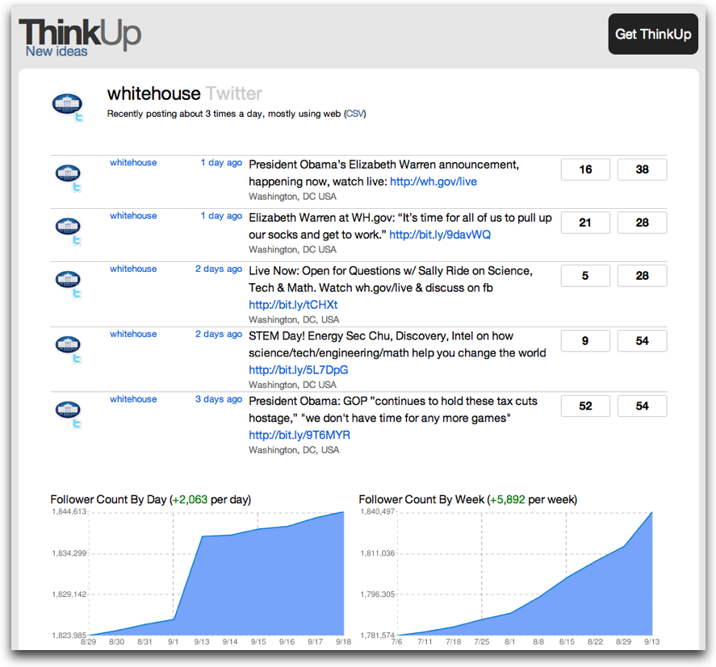

New ideas come from conversations.
ThinkUp lets you get insights from the time you spend on social networks like Twitter and Facebook.
|
ThinkUp captures your posts, replies, retweets, friends, followers, and links on social networks like Twitter and Facebook. We'll be adding more networks in the future. ThinkUp stores your social data in a database you control, and makes it easy to search, sort, filter, export, and visualize in useful ways. ThinkUp is an open source software project licensed under the GNU GPL, founded by Gina Trapani, sponsored by Expert Labs, used to help the White House, and built by an enthusiastic community of contributors like you. Join us.  Download ThinkUp »You'll need a web server running PHP 5.2 and MySQL 5. See the full list of system requirements. |
 |
Features:Setting up ThinkUp takes a couple of minutes if you know how to install a web app. Once you're running, there's lots you can do!
|
Screenshots: |
{kind=link}
{kind=link}
{kind=link}
{kind=link}
{kind=link}
{kind=link}
{kind=link}
{kind=link}
{kind=link}
{kind=link}
{kind=link}
{kind=link}
{kind=link}
Join the Conversation
We want you to use ThinkUp and give the community your feedback. And we're also looking for developers and testers who can help us make ThinkUp even better. Everybody is welcome to contribute!
If you're a user, blogger, Twitterer or Facebooker:
- Download ThinkUp and start using it.
- Follow @thinkupapp on Twitter.
- Check out the ThinkUp documentation wiki, and make improvements to it if you see something that needs fixing.
- Subscribe to the Expert Labs blog to find out the latest news on our projects.
- Join the mailing list and be part of the conversation about ThinkUp's future.
- Chat directly with other ThinkUp users and developers.
- Tell your friends about ThinkUp!
If you're a programmer, developer, or designer:
- Fork the source code on GitHub.
- Read our Developer's Guide.
- Browse our source code documentation.
- Check out our bug tracker and to-do list.
- Let us know what you think on the ThinkUp mailing list.
- Collaborate real-time with the ThinkUp community on IRC.